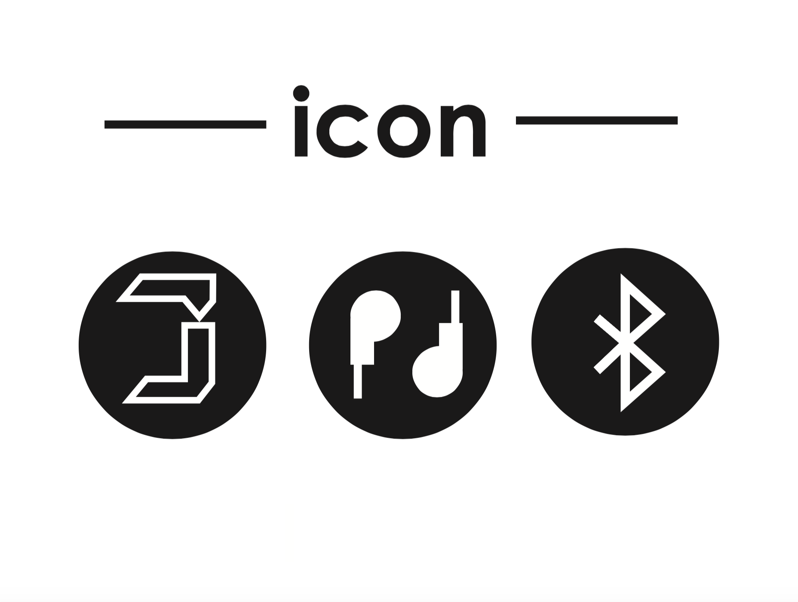
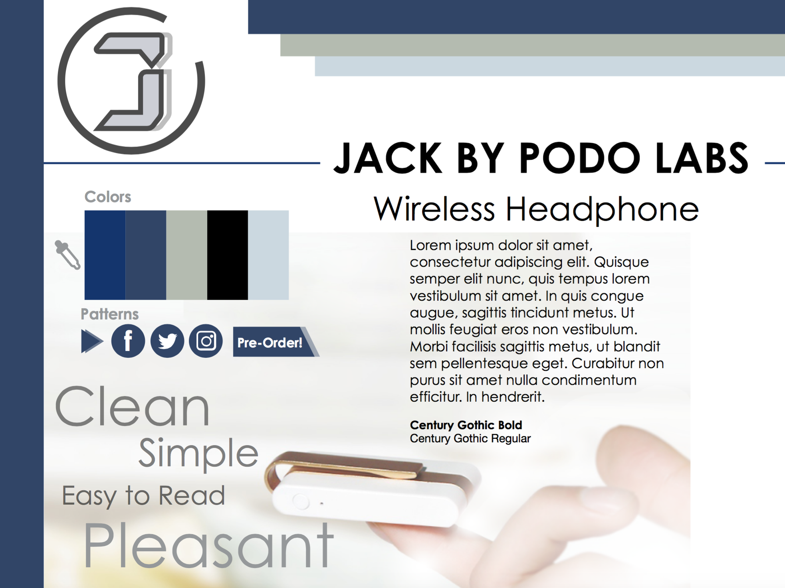

Jack by Podo labs - Branding Design
For this project, I did a branding design project called "Jack" by Podo Labs with three of the graphic design students.
In this project, a logo, icons, style tiles, a poster, a facebook cover photo, and a website page are included.
-
Logo
-
Icons
 -
Style Tile
 -
Poster
-
Facebook Cover Photo

-
Website